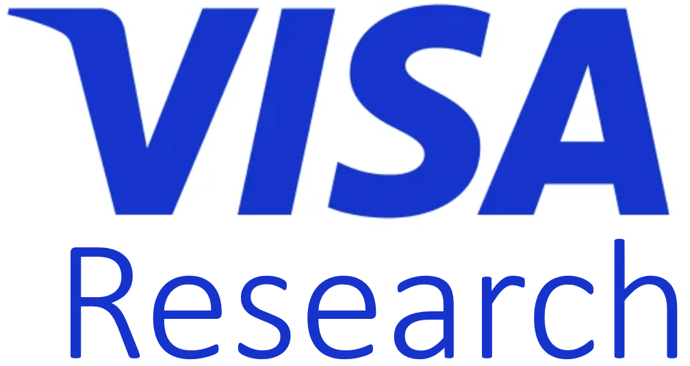

Zhiyu ZengPost-Doctoral Research AssociateOlin Business School Washington University in St. Louis Email: zengz [at] wustl [dot] edu
|

|


Bio
Zhiyu Zeng is currently working as a Post-Doctoral Research Associate at the Olin Business School, Washington University in St. Louis. In 2023, I earned my Ph.D. in Management Science and Engineering from Tsinghua University, where I was advised by Prof. Zuo-Jun Max Shen. Prior to this, in 2018, I completed my bachelor’s degrees in both Industrial Engineering and Business Administration, also at Tsinghua University.
I will be on the job market in 2025!
Research Scope
Zhiyu's research examines operational challenges within digital platforms, adopting a causality-centric lens. I utilize data-driven causal inference, field experimentation, structural modeling, and machine learning techniques to analyze and enhance the strategies within online marketplaces. A particular focus of my work is on improving the incentives for both supply and demand sides of these digital ecosystems.
News
| [03/2024] | Received the IST Ph.D. Student Award for Research Excellence, the highest honor for IST graduate students in research. Thank my advisor and collaborators! |
| [02/2024] | One tutorial was accepted by PAKDD 2024 on heterogeneity in federated learning. |
| [02/2024] | Received SDM 2024 Travel Award. |
| [02/2024] | One paper was accepted by LREC-Coling 2024 on automated ICD coding. |
| [02/2024] | Two paper were accepted by PAKDD 2024 on personalized federated learning (oral presentation) and foundation models in federated learning (poster). |
| [01/2024] | I was invited to serve as a PC member for IJCAI 2024. |
| [01/2024] | I will join Sony AI as a research intern working on foundation models in federated learning this spring. |
| [12/2023] | Two paper were accepted by SDM 2024 on EHR data generation with diffusion models and automated machine learning for risk prediction. |
| [11/2023] | One paper was accepted by AAAI 2024 on security of pre-trained models. |
| [11/2023] | One tutorial was accepted by SDM 2024 on heterogeneity in federated learning. |
| [10/2023] | One paper was accepted by International Workshop on Federated Learning in the Age of Foundation Models in Conjunction with NeurIPS 2023 on foundation model security in federated learning. |
| [10/2023] | Received NeurIPS 2023 Scholar Award. |
| [10/2023] | One paper was accepted by EMNLP 2023 on hierarchical pretraining using multimodal EHR data. |
| [09/2023] | One paper was accepted by Rare Disease and Orphan Drugs Journal on federated learning for rare disease detection. |
| [09/2023] | One paper was accepted by NeurIPS 2023 on heterogeneous model reassembly in FL. |
| [09/2023] | I was invited to serve as a PC member for SDM 2024. |
| [08/2023] | I was invited to serve as a reviewer for Learning on Graphs 2023. | [08/2023] | One survey paper "Multimodal Federated Learning: A Survey" was accepted by Sensors. |
| [03/2023] | Received KDD 2023 Travel Award. |
| [06/2023] | One paper was accepted by Federated Learning for Distributed Data Mining, KDD 2023 on heterogeneous model aggregation in FL. |
| [06/2023] | I was invited to serve as a reviewer for EMNLP 2023. | [05/2023] | I was invited to serve as a PC member for FL for Distributed Data Mining KDD 2023. |
| [04/2023] | I will join Visa Research as a machine learning research intern at the ATL office this summer. |
| [03/2023] | Received SDM 2023 Travel Award. |
| [02/2023] | Received IST College 2023 Travel Award. |
| [02/2023] | I was invited to serve as a reviewer for IEEE Transactions on Neural Networks and Learning Systems. | [01/2023] | I passed the comprehensive exam and became a Ph.D. candidate. | [01/2023] | I was invited to serve as a reviewer for AAAI 2023 Workshop for AI Acceleration. | [12/2022] | One paper was accepted by SDM 2023 on semi-supervised federated learning. |
| [12/2022] | I was invited to serve as a PC member for KDD 2023. |
| [12/2022] | I was invited to serve as a PC member for ACL 2023. |
| [11/2022] | I was invited to serve as a PC member for AAAI 2023 Workshop. |
| [11/2022] | Received IST College 2022 Travel Award. |
| [10/2022] | One paper was accepted by BIBM 2022 on automated medical risk predictive modeling on EHR. |
| [10/2022] | I was invited to serve as a reviewer for NeurIPS 2022 Workshop MetaLearn. | [09/2022] | I was invited to serve as a reviewer for Learning on Graphs 2022. | [08/2022] | One paper was accepted by ICDM 2022. | [08/2022] | I was invited to serve as a PC Member for FedGraph 2022. | [07/2022] | I was invited to serve as a PC Member for AAAI 2023. | [06/2022] | One paper was accepted by ECML PKDD 2022 on COVID-19 vaccine side effect prediction using federated learning. |
| [03/2022] | I will join Visa Research as a machine learning research intern this summer. |
| [02/2022] | I start to cooperate with Sony R&D Center to work on federated learning in multi-domain applications. |
| [10/2021] | One paper was accepted by BigData 2021 on semi-supervised federated learning. |
| [04/2021] | One paper was accepted by Asian Chi 2021. Thanks Dr. Ritter! |
| [04/2021] | I will join Analytics Center of Excellence, IQVIA as a machine learning research intern in 2021 summer. |
| [03/2021] | Received IST College 2021 Travel Award. |
| [02/2021] | I was invited to serve as a reviewer for ACL-IJCNLP 2021. |
| [01/2021] | One paper was accepted by AAAI Workshop 2021 and selected as Spotlight Presentation. |
| [11/2020] | I was invited to serve as a session chair at IEEE Cybermatics Congress 2020. |
| [10/2020] | I was invited to give a talk at Kennesaw State University. Thank Dr. Xu for host. |
| [10/2020] | One paper was accepted by W-NUT 2020. |
| [09/2020] | Served as an external reviewer for WSDM 2021. |
| [08/2020] | Served as an external reviewer for CCS 2020. |
| [08/2020] | I was invited to serve as a reviewer for IEEE IPCCC 2020. |
| [06/2020] | I was invited to serve as a reviewer for WASA 2020. |
| [06/2020] | I was invited to serve as a reviewer for Information Discovery and Delivery. |
| [10/2019] | I was invited to give a talk at the annual conference of Zhejiang University Alumni Association in North America. |
| [08/2019] | I moved from Georgia to Pennsylvania. Bye old friends and hi new friends! |
| [03/2019] | I received the 2019 Brahm Verma Graduate Leadership Award - Honorable Mention. |
| [10/2018] | I was invited to give a talk at the Youth Scholar Forum hold by Georgia Tech and Association of Chinese Professionals. |
Selected Publications
Tutorials
Tutorial: Heterogeneity in Federated Learning
Jiaqi Wang, Fenglong Ma
SDM 2024
[Website]
Conference Papers
CoRelation: Boosting Automatic ICD Coding Through Contextualized Code Relation Learning
Junyu Luo, Xiaochen Wang, Jiaqi Wang, Aofei Chang, Yaqing Wang, Fenglong Ma
LREC-COLING 2024
Rethinking Personalized Federated Learning with Clustering-based Dynamic Graph Propagation
Jiaqi Wang, Yuzhong Chen, Yuhang Wu, Mahashweta Das, Hao Yang, Fenglong Ma
PAKDD 2024
Oral presentation
[Paper]
Unveiling Backdoor Risks Brought by Foundation Models in Heterogeneous Federated Learning
Xi Li, Chen Wu, Jiaqi Wang*
PAKDD 2024
[Paper]
Automated Fusion of Multimodal Electronic Health Records for Better Medical Predictions
Suhan Cui, Jiaqi Wang, Yuan Zhong, Han Liu, Ting Wang, Fenglong Ma
SDM 2024
MedDiffusion: Boosting Health Risk Prediction via Diffusion-based Data Augmentation
Yuan Zhong, Suhan Cui, Jiaqi Wang, Ziyi Yin, Yaqing Wang, Houping Xiao, Mengdi Huai, Ting Wang, Fenglong Ma
SDM 2024
VQAttack: Transferable Adversarial Attacks on Visual Question Answering via Pre-trained Models
Ziyi Yin, Muchao Ye, Tianrong Zhang, Jiaqi Wang, Han Liu, Jinghui Chen, Ting Wang, Fenglong Ma
AAAI 2024
Hierarchical Pretraining on Multimodal Electronic Health Records
Xiaochen Wang, Junyu Luo, Jiaqi Wang, Ziyi Yin, Suhan Cui, Yuan Zhong, Yaqing Wang, Fenglong Ma
EMNLP 2023
[Paper]
Towards Personalized Federated Learning via Heterogeneous Model Reassembly
Jiaqi Wang, Xingyi Yang, Suhan Cui, Liwei Che, Lingjuan Lyn, Dongkuan Xu, Fenglong Ma
NeurIPS 2023
[Paper] [Poster]
Knowledge-Enhanced Semi-Supervised Federated Learning for Aggregating Heterogeneous Lightweight Clients in IoT
Jiaqi Wang, Shenglai Zeng, Zewei Long, Yaqing Wang, Houping Xiao, Fenglong Ma
SDM 2023
[Paper] [Slides][Poster]
AUTOMED: Automated Medical Risk Predictive Modeling on Electronic Health Records
Suhan Cui, Jiaqi Wang, Xinning Gui, Ting Wang, Fenglong Ma
BIBM 2022
[Paper]
MedSkim: Denoised Health Risk Prediction via Skimming Medical Claims Data
Suhan Cui, Junyu Luo, Muchao Ye, Jiaqi Wang, Ting Wang, Fenglong Ma
ICDM 2022
Towards Federated COVID-19 Vaccine Side Effect Prediction
Jiaqi Wang, Cheng Qian, Suhan Cui, Lucas M. Glass, Fenglong Ma
ECML PKDD 2022
[Paper]
FedTriNet: A Pseudo Labeling Method with Three Players for Federated Semi-supervised Learning
Liwei Che, Zewei Long, Jiaqi Wang, Yaqing Wang, Houping Xiao, and Fenglong Ma
BigData 2021
[Paper]
Journal Papers
Federated Learning for Rare Disease Detection: A Survey
Jiaqi Wang, Fenglong Ma
Rare Disease and Orphan Drugs Journal
[Paper]
Multimodal Federated Learning: A Survey
Liwei Che, Jiaqi Wang, Fenglong Ma
Sensors
[Paper]
Workshop Papers
Backdoor Threats from Compromised Foundation Models to Federated Learning
Xi Li, Songhe Wang, Chen Wu, Hao Zhou, Jiaqi Wang*
International Workshop on Federated Learning in the Age of Foundation Models in Conjunction with NeurIPS 2023
[Paper]
FedLEGO: Enabling Heterogenous Model Cooperation via Playing Toys
Jiaqi Wang, Suhan Cui, Fenglong Ma
Federated Learning for Distributed Data Mining, KDD 2023
[Paper] (The full version has been accepted by NeurIPS 2023.)
An In-depth Review of Privacy Concerns Raised by the COVID-19 Pandemic
Jiaqi Wang
AAAI Workshop 2021
[Paper] [Slides]
Are Learners Satisfied with their MOOC Experiences? Assessing and Improving Online Learners’ Interactions
Jiaqi Wang, Chacha Chen, Hua Shen, Frank E Ritter
Asian Chi 2021
[Paper]
Joint Event Multi-task Learning for Slot Filling in Noisy Text
Chacha Chen, Chieh-Yang Huang, Yaqi Hou, Yang Shi, Enyan Dai, Jiaqi Wang*
In Proceedings of the Workshop on Noisy User-generated Text (W-NUT, EMNLP 2020)
[Paper]
[Code]
Preprint Papers
Recent Advances in Predictive Modeling with Electronic Health Records
Jiaqi Wang, Junyu Luo, Muchao Ye, Xiaochen Wang, Yuan Zhong, Aofei Chang, Guanjie Huang, Ziyi, Yin, Cao Xiao, Jimeng Sun, Fenglong Ma
arXiv preprint arXiv:2402.01077v1
[Paper]
Vulnerabilities of Foundation Model Integrated Federated Learning Under Adversarial Threats
Chen Wu, Xi Li, Jiaqi Wang*
arXiv preprint arXiv:2401.10375v1
[Paper]
FedCon: A Contrastive Framework for Federated Semi-Supervised Learning
Zewei Long, Jiaqi Wang, Yaqing Wang, Houping Xiao, Fenglong Ma
arXiv preprint arXiv:2109.045331
[Paper]
Experience
|
Sony AI, US Research Intern, Spring 2024 Mentors: Jingtao Li, Weiming Zhuang, Lingjuan Lyu |
|
|
Visa Research, CA, US Machine Learning Research Intern, Summer 2022, 2023 Mentors in 2023: Yiwei Cai, Shan Jin, Yuzhong Chen Mentors in 2022: Hao Yang, Yuzhong Chen, Yuhang Wu |
 |
|
Analytics Center of Excellence, IQVIA, MA, US Machine Learning Research Intern, Summer 2021 Mentors: Cheng Qian |
|
|
USGS, GA, US Research Scientist Intern, Spring 2019 |
|

Teaching
Teaching Assistant
Mentored Students
Awards
Service